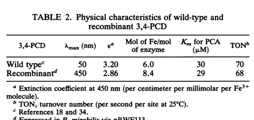

PcaH is the beta subunit of the ferric-iron-dependent protocatechuate 3,4-dioxygenase complex (PcaHG), which cleaves protocatechuate/3,4-dihydroxybenzoate in the ortho branch of aromatic compound catabolism in Pseudomonas putida KT2440. The enzyme participates in the protocatechuate branch of the beta-ketoadipate pathway used to assimilate 4-hydroxybenzoate and related lignin-derived aromatics.
| GO Term | Evidence | Action | Reason |
|---|---|---|---|
|
GO:0003824
catalytic activity
|
IEA
GO_REF:0000002 |
MARK AS OVER ANNOTATED |
Summary: This is technically correct but uninformative. The literature and sequence evidence support a precise catalytic role for pcaH as part of protocatechuate 3,4-dioxygenase, so the generic statement that the protein has catalytic activity adds no useful biological resolution.
Reason: The specific molecular function term GO:0018578 already captures the informative activity.
Supporting Evidence:
file:PSEPK/pcaH/pcaH-notes.md
`GO:0003824 catalytic activity` is too generic to keep as informative biology.
|
|
GO:0005506
iron ion binding
|
IEA
GO_REF:0000002 |
MARK AS OVER ANNOTATED |
Summary: Iron binding is real for the protocatechuate 3,4-dioxygenase complex, but this parent term is redundant because the more specific ferric iron binding term is also present and better matches the enzymology of the Pseudomonas putida enzyme.
Reason: GO:0008199 is the more informative child term for this enzyme system.
Supporting Evidence:
file:PSEPK/pcaH/pcaH-notes.md
`GO:0005506 iron ion binding` is correct but redundant with ferric iron binding.
|
|
GO:0008199
ferric iron binding
|
IEA
GO_REF:0000002 |
ACCEPT |
Summary: This term is well supported by primary enzymology on Pseudomonas putida protocatechuate 3,4-dioxygenase. The purified enzyme contains ferric iron catalytic units, and mechanistic work explicitly describes an active-site Fe(III) chelated by substrate during catalysis. For pcaH specifically, this reflects the cofactor environment of the beta-containing PcaHG complex rather than a nonspecific metal-binding prediction.
Reason: Ferric iron is a defining catalytic cofactor of the protocatechuate 3,4-dioxygenase complex, and the falcon deep research places the Fe(III)-coordinating residues (two histidines and two tyrosines) within the beta subunit (PcaH) itself, so this is a genuine PcaH binding function rather than only a complex-level or family-level prediction.
Supporting Evidence:
file:PSEPK/pcaH/pcaH-notes.md
The purified P. putida enzyme is a ferric-iron-containing multimer with `4 beta subunits` and `4 ferric irons`, supporting ferric iron binding as a real catalytic property of the complex rather than only a family prediction.
file:PSEPK/pcaH/pcaH-notes.md
Mechanistic work on the same P. putida enzyme states that protocatechuate chelates the active-site `Fe(III)`, reinforcing that the enzyme is ferric-iron-dependent.
file:PSEPK/pcaH/pcaH-deep-research-falcon.md
a catalytic **Fe3+** located at the **subunit interface**, ligated by **two histidines and two tyrosines** (within the β subunit), and that the α subunit contributes to substrate binding.
file:PSEPK/pcaH/pcaH-deep-research-falcon.md
EPR signals consistent with **high-spin Fe(III)** (e.g., g ≈ 4.28 and 9.67).
|
|
GO:0016702
oxidoreductase activity, acting on single donors with incorporation of molecular oxygen, incorporation of two atoms of oxygen
|
IEA
GO_REF:0000002 |
KEEP AS NON CORE |
Summary: This high-level oxidoreductase/dioxygenase term is consistent with the known chemistry of protocatechuate 3,4-dioxygenase but is broader than needed once the specific catalytic term GO:0018578 is present. It is a reasonable parent annotation but does not best represent the core function.
Reason: The annotation is accurate but less informative than the specific enzyme activity term. The falcon deep research confirms the defining chemistry of this parent term (incorporation of both atoms of O2), so it is correct yet redundant with the specific GO:0018578 annotation.
Supporting Evidence:
file:PSEPK/pcaH/pcaH-notes.md
`GO:0016702` is a reasonable higher-level parent but non-core because the specific dioxygenase term is present.
file:PSEPK/pcaH/pcaH-deep-research-falcon.md
The reaction incorporates both oxygen atoms from O2 and produces **β-carboxy-cis,cis-muconate**
|
|
GO:0018578
protocatechuate 3,4-dioxygenase activity
|
IEA
GO_REF:0000120 |
ACCEPT |
Summary: This is the core molecular function for pcaH. Classical biochemical genetics identifies pcaH as the beta-subunit gene of protocatechuate 3,4-dioxygenase, and KT2440 engineering studies repeatedly disable pcaHG to block protocatechuate consumption and reroute PCA into other products. The only caveat is that pcaH acts as the beta subunit of a multimeric enzyme complex, so the catalytic activity is executed in the context of PcaHG rather than by an isolated monomer.
Reason: This term precisely captures the specific enzyme activity associated with the gene product.
Supporting Evidence:
file:PSEPK/pcaH/pcaH-notes.md
Classic Pseudomonas biochemical genetics identifies `pcaH` and `pcaG` as the genes for the beta and alpha subunits of protocatechuate 3,4-dioxygenase.
file:PSEPK/pcaH/pcaH-notes.md
KT2440 engineering papers use `pcaHG` knockout to block protocatechuate consumption and reroute PCA into product pathways, which is strong strain-specific evidence that the locus performs the protocatechuate ring-cleavage step in this background.
file:PSEPK/pcaH/pcaH-deep-research-falcon.md
encodes the **β (beta) subunit** of **protocatechuate 3,4-dioxygenase** (also written 3,4-PCD; **EC 1.13.11.3**).
file:PSEPK/pcaH/pcaH-deep-research-falcon.md
PcaH is not a standalone enzyme; it functions as the **β subunit within the PcaGH complex**, which has active sites at subunit interfaces and is composed of an equimolar assembly of the two subunits.
|
|
GO:0019619
3,4-dihydroxybenzoate catabolic process
|
IEA
GO_REF:0000002 |
ACCEPT |
Summary: This process term is appropriately specific for the step carried out by the protocatechuate 3,4-dioxygenase complex. KT2440 pathway engineering papers show that PCA/protocatechuate is normally split by pcaGH and accumulates when the locus is knocked out, which is consistent with direct participation in 3,4-dihydroxybenzoate catabolism.
Reason: The annotation matches the immediate biological process supported by the strain-specific pathway literature, and the falcon deep research places PcaGH at the committed ring-cleavage step of the protocatechuate branch of the beta-ketoadipate pathway.
Supporting Evidence:
file:PSEPK/pcaH/pcaH-notes.md
KT2440 engineering papers use `pcaHG` knockout to block protocatechuate consumption and reroute PCA into product pathways, which is strong strain-specific evidence that the locus performs the protocatechuate ring-cleavage step in this background.
file:PSEPK/pcaH/pcaH-deep-research-falcon.md
PcaGH is a key enzyme in the **protocatechuate branch of the β-ketoadipate (βKA) pathway**, converting PCA to ring-opened products that are subsequently processed toward β-ketoadipate
|
Q: Does the KT2440 PcaHG complex differ kinetically or in substrate range from the classically characterized Pseudomonas putida 3,4-PCD enzymes used in mechanistic studies?
Q: Under lignin-rich or hydrolysate conditions, is pcaH controlled only by the canonical pca regulon or are additional KT2440-specific regulatory inputs important?
Experiment: Purify the KT2440 PcaHG complex and measure steady-state kinetics with protocatechuate and close analogs.
Hypothesis: KT2440 PcaHG is a ferric-iron-dependent protocatechuate 3,4-dioxygenase with strong preference for protocatechuate as substrate.
Type: Enzyme purification and in vitro kinetics
Experiment: Complement a KT2440 pcaGH deletion strain with pcaG alone, pcaH alone, or both genes and measure PCA consumption and growth on 4-hydroxybenzoate or protocatechuate.
Hypothesis: Restoring both subunits will recover protocatechuate ring cleavage, whereas single-subunit complementation will not.
Type: Genetic complementation and growth/consumption assays
Experiment: Measure pcaH transcript and protein abundance during growth on 4-hydroxybenzoate, protocatechuate, p-coumarate, and ferulate.
Hypothesis: pcaH induction tracks flux through the protocatechuate branch of aromatic catabolism.
Type: RT-qPCR and targeted proteomics
The research report should be a detailed narrative explaining the function, biological processes, and localization of the gene product. Citations should be given for all claims.
You should prioritize authoritative reviews and primary scientific literature when conducting research. You can supplement
this with annotations you find in gene/protein databases, but these can be outdated or inaccurate.
We are specifically interested in the primary function of the gene - for enzymes, what reaction is catalyzed, and what is the substrate specificity? For transporters, what is the substrate? For structural proteins or adapters, what is the broader structural role? For signaling molecules, what is the role in the pathway.
We are interested in where in or outside the cell the gene product carries out its function.
We are also interested in the signaling or biochemical pathways in which the gene functions. We are less interested in broad pleiotropic effects, except where these elucidate the precise role.
Include evidence where possible. We are interested in both experimental evidence as well as inference from structure, evolution, or bioinformatic analysis. Precise studies should be prioritized over high-throughput, where available.
The UniProt target Q88E12 corresponds to pcaH (ordered locus PP_4656) in Pseudomonas putida KT2440 and encodes the β (beta) subunit of protocatechuate 3,4-dioxygenase (also written 3,4-PCD; EC 1.13.11.3). In P. putida, pcaG and pcaH are adjacent ORFs encoding the two nonidentical structural subunits of protocatechuate 3,4-dioxygenase (PcaG = α; PcaH = β). (frazee1993cloningsequencingand pages 3-4, frazee1993cloningsequencingand pages 1-2)
Protocatechuate 3,4-dioxygenase is an intradiol (ortho) ring-cleaving dioxygenase that catalyzes cleavage of the aromatic ring of protocatechuate / protocatechuic acid (PCA; 3,4-dihydroxybenzoate) using molecular oxygen. The reaction incorporates both oxygen atoms from O2 and produces β-carboxy-cis,cis-muconate (also described as p-carboxy-cis,cis-muconic acid / carboxy-cis,cis-muconic acid). (iwagami1999proteinpurificationand pages 17-21, sodre2024sustainableproductionof pages 6-7)
PcaH is not a standalone enzyme; it functions as the β subunit within the PcaGH complex, which has active sites at subunit interfaces and is composed of an equimolar assembly of the two subunits. In P. putida, purified enzyme shows two major polypeptides consistent with ~22.3 kDa (α) and ~26.6 kDa (β) subunits. (frazee1993cloningsequencingand pages 1-2, frazee1993cloningsequencingand pages 6-7)
Frazee et al. cloned and expressed P. putida pcaHG, purified recombinant enzyme, and performed activity assays by monitoring oxygen consumption (oxygen electrode), consistent with an O2-dependent dioxygenase reaction on PCA. (frazee1993cloningsequencingand pages 2-3)
Protocatechuate 3,4-dioxygenase is a non-heme Fe(III)-dependent dioxygenase. A mechanistic description in the provided literature indicates a catalytic Fe3+ located at the subunit interface, ligated by two histidines and two tyrosines (within the β subunit), and that the α subunit contributes to substrate binding. (iwagami1999proteinpurificationand pages 17-21)
Direct spectroscopic evidence in P. putida recombinant enzyme shows features characteristic of an Fe(III) center: a red chromophore with absorbance near ~450 nm (attributed to charge transfer involving Fe(III)–tyrosinate ligands), an O2-dependent spectral shift upon formation of an enzyme–substrate–O2 complex, and EPR signals consistent with high-spin Fe(III) (e.g., g ≈ 4.28 and 9.67). (frazee1993cloningsequencingand pages 6-7, frazee1993cloningsequencingand media ffb356d9)
For the recombinant P. putida enzyme, reported values include Km ~29–30 μM for PCA, turnover number values on the order of ~68–70, and specific activity ~57 U/mg under the reported assay conditions (PCA range ~60 μM to 3 mM; O2 consumption-based assays). (frazee1993cloningsequencingand pages 2-3, frazee1993cloningsequencingand pages 6-7)
While PCA is the canonical substrate, a KT2440-focused biochemical study reported promiscuous cleavage of gallate by PcaHG but with much lower catalytic efficiency than for PCA (apparent kcat ~0.0675 s−1 for gallate vs ~0.95 s−1 for PCA; apparent specificity for gallate ~20% of that for PCA). In the same study, PcaHG showed no detectable activity on 3-O-methylgallate (3-MGA) by oxygen consumption or UV–Vis spectral changes. (dumalo2020dioxygenasesinthe pages 48-55, dumalo2020dioxygenasesinthe pages 1-6)
No explicit experimental subcellular localization statement for KT2440 PcaH was found in the retrieved sources. However, the enzyme is routinely purified from cell extracts and characterized as a soluble enzyme using in vitro oxygen-electrode and spectroscopic assays, which is most consistent with an intracellular (cytosolic) enzyme complex. (frazee1993cloningsequencingand pages 2-3, li2016characterizationofa pages 6-8)
In P. putida, PcaGH is a key enzyme in the protocatechuate branch of the β-ketoadipate (βKA) pathway, converting PCA to ring-opened products that are subsequently processed toward β-ketoadipate and entry into central metabolism (TCA-cycle-linked metabolism). (frazee1993cloningsequencingand pages 1-2, sodre2024sustainableproductionof pages 6-7)
Primary literature identifies pcaH and pcaG as adjacent ORFs within the pcaHG cluster encoding 3,4-PCD. In other bacteria with homologous pathways, pcaH is typically upstream of pcaG, consistent with conservation of the pcaHG unit. (frazee1993cloningsequencingand pages 1-2, iwagami2000characterizationofthe pages 6-7)
A pathway-level regulatory description in the provided evidence indicates that in P. putida cat genes are positively regulated by CatR (a LysR-type regulator), while PcaR activates pca (βKA/protocatechuate-branch) gene expression. (iwagami1999proteinpurificationand pages 17-21)
Two 2023–2024 KT2440 primary studies highlight that pcaH/pcaHG is a practical “control point” for lignin-derived aromatic metabolism—either to accelerate flux through PCA (overexpression) or to block PCA consumption (knockout) for product accumulation.
Werner et al. (Science Advances, 2023-09, https://doi.org/10.1126/sciadv.adj0053) engineered P. putida KT2440 to convert lignin-related aromatic mixtures to β-ketoadipate, tuning expression of aromatic catabolism steps including ring opening at/near the protocatechuate node. The study reports that Ptac-driven pcaHG expression was included in an engineered strain (AW311). Quantitatively, the work achieved β-ketoadipate titers up to 44.5 g/L and productivities up to 1.15 g/L/h from model lignin-related compounds, and 25 g/L at 0.66 g/L/h from corn stover-derived lignin-related compounds. (werner2023ligninconversionto pages 2-4, werner2023ligninconversionto pages 1-2)
The authors’ strain comparisons indicate that protocatechuate processing can represent a metabolic constraint: pcaHG overexpression alone did not eliminate protocatechuate buildup, but in a multi-modification background it reduced protocatechuate accumulation, consistent with interaction among upstream/downstream steps and regulation. (werner2023ligninconversionto pages 5-7)
Jin et al. (Molecules, 2024-03, https://doi.org/10.3390/molecules29071555) engineered P. putida KT2440 to accumulate PCA by knocking out pcaGH, explicitly stating that pcaGH knockout is necessary for PCA accumulation because hydrolysate aromatics are funneled to PCA and then “split” by pcaGH in the native pathway. (jin2024biologicalvalorizationof pages 4-7)
Quantitatively, the study reports PCA production from realistic biomass-derived streams: 253.88 mg/L PCA (yield 70.85%) from one corncob hydrolysate and 433.72 mg/L PCA from another hydrolysate without additional nutrients. (jin2024biologicalvalorizationof pages 1-2)
From model lignin-derived aromatics, the engineered strain produced up to 6.11 g/L PCA from 10 g/L p-coumarate in 72 h, and substrate-dependent yields could be very high (e.g., ~93–98% yields from several H-lignin-related monomers under reported conditions). (jin2024biologicalvalorizationof pages 7-9, jin2024biologicalvalorizationof pages 4-7)
A 2024 review by Sodré & Bugg (Chemical Communications, 2024-11, https://doi.org/10.1039/d4cc05064a) emphasizes that pcaHG encodes the native PCA ortho-cleavage function, and describes metabolic engineering strategies in which pcaHG is replaced with aroY (a protocatechuate decarboxylase) in KT2440 to redirect PCA toward catechol and cis,cis-muconate production rather than native PCA 3,4-cleavage. (sodre2024sustainableproductionof pages 10-11, sodre2024sustainableproductionof pages 9-10)
Key quantitative data directly extracted from the provided sources include:
- Enzyme kinetics (P. putida PcaGH): Km for PCA ~29–30 μM; turnover number ~68–70; specific activity ~57 U/mg; high-spin Fe(III) EPR signatures. (frazee1993cloningsequencingand pages 6-7, frazee1993cloningsequencingand media ffb356d9)
- Substrate promiscuity (KT2440 PcaGH): apparent kcat (PCA) ~0.95 s−1 vs (gallate) ~0.0675 s−1; no activity detected on 3-MGA. (dumalo2020dioxygenasesinthe pages 48-55)
- Engineered production (KT2440): β-ketoadipate titers up to 44.5 g/L and productivity up to 1.15 g/L/h (Werner 2023). (werner2023ligninconversionto pages 2-4, werner2023ligninconversionto pages 1-2)
- Engineered PCA accumulation (KT2440): up to 433.72 mg/L PCA from corncob hydrolysate (Jin 2024) and up to 6.11 g/L PCA from 10 g/L p-coumarate. (jin2024biologicalvalorizationof pages 1-2, jin2024biologicalvalorizationof pages 7-9)
The following tables consolidate (i) mechanistic functional annotation and (ii) 2023–2024 KT2440-relevant application literature.
| Aspect | Key points | Best supporting citations (pqac ids) |
|---|---|---|
| identity/subunit | UniProt Q88E12 matches pcaH from Pseudomonas putida KT2440, encoding the β subunit of protocatechuate 3,4-dioxygenase (3,4-PCD; EC 1.13.11.3); companion gene pcaG encodes the α subunit. This assignment is consistent with the conserved pcaHG naming used in primary literature. | (frazee1993cloningsequencingand pages 3-4, frazee1993cloningsequencingand pages 1-2, iwagami2000characterizationofthe pages 6-7) |
| enzyme complex | PcaH functions only as part of the heteromultimeric PcaGH enzyme complex. 3,4-PCD is described as an equimolar assembly of two nonidentical subunits with active sites at subunit interfaces; for P. putida the subunits are ~26.6 kDa (β/PcaH) and ~22.3 kDa (α/PcaG). | (iwagami1999proteinpurificationand pages 17-21, frazee1993cloningsequencingand pages 1-2, frazee1993cloningsequencingand pages 6-7) |
| reaction | The PcaGH complex catalyzes intradiol (ortho) ring cleavage of protocatechuate/protocatechuic acid (PCA) using molecular oxygen to form β-carboxy-cis,cis-muconate (also written p-carboxy-cis,cis-muconic acid / carboxy-cis,cis-muconic acid), a key step in the protocatechuate branch of the β-ketoadipate pathway. | (iwagami1999proteinpurificationand pages 17-21, frazee1993cloningsequencingand pages 1-2, chow2024confirmationofgenes pages 11-15, sodre2024sustainableproductionof pages 6-7) |
| cofactors/active site | 3,4-PCD is a non-heme Fe(III)-dependent dioxygenase. The catalytic iron is located at the subunit interface and is ligated by two histidines and two tyrosines; the α subunit contributes to substrate binding. Spectroscopy/EPR in recombinant P. putida enzyme showed a red Fe(III)-associated chromophore, an O2-dependent spectral shift, and high-spin Fe(III) signals (g ≈ 4.28, 9.67). Ferrous ammonium sulfate supplementation was used during expression/purification. | (iwagami1999proteinpurificationand pages 17-21, frazee1993cloningsequencingand pages 2-3, frazee1993cloningsequencingand pages 6-7, frazee1993cloningsequencingand media ffb356d9) |
| kinetics | For recombinant P. putida 3,4-PCD, reported kinetic values for PCA were Km ~29–30 μM, turnover number ~68–70, and specific activity ~57 U/mg. Assays used PCA concentrations from about 60 μM to 3 mM and monitored O2 consumption. | (frazee1993cloningsequencingand pages 2-3, frazee1993cloningsequencingand pages 6-7, frazee1993cloningsequencingand media ffb356d9) |
| substrate scope | Canonical substrate is PCA. In KT2440-focused work, PcaHG also showed promiscuous but weaker activity toward gallate: apparent kcat ~0.0675 s^-1 and Km ~15 μM versus PCA kcat ~0.95 s^-1 and Km ~33 μM, giving apparent specificity about 20% of that for PCA. No measurable activity was detected toward 3-MGA in that study. | (dumalo2020dioxygenasesinthe pages 48-55, dumalo2020dioxygenasesinthe pages 1-6, dumalo2020dioxygenasesinthe pages 39-44) |
| pathway role | PcaH/PcaGH performs the ring-cleavage step that commits PCA into the β-ketoadipate/protocatechuate branch, funneling diverse lignin- and aromatic-derived compounds toward β-ketoadipate and then central carbon metabolism. In metabolic engineering, deleting pcaHG prevents PCA consumption and enables PCA accumulation or rerouting to catechol/muconate; overexpressing pcaHG can relieve protocatechuate-processing bottlenecks in β-ketoadipate production. | (frazee1993cloningsequencingand pages 1-2, werner2023ligninconversionto pages 5-7, jin2024biologicalvalorizationof pages 4-7, sodre2024sustainableproductionof pages 10-11) |
| regulation notes | Broader pathway regulation in Pseudomonas places pca genes under positive control by PcaR (described as a PobR-family regulator), while catechol-branch genes are positively regulated by CatR. pca genes are generally clustered, and pcaG/pcaH are tightly linked; in related organisms pcaH is often upstream of pcaG. Direct KT2440-specific transcriptional regulation of pcaH alone was not resolved in the retrieved context. | (iwagami1999proteinpurificationand pages 17-21, iwagami2000characterizationofthe pages 6-7) |
| localization | No direct experimental subcellular localization statement for KT2440 PcaH was found in the retrieved context. Available evidence is most consistent with a soluble intracellular/cytosolic enzyme complex, based on recombinant purification from cell extracts, oxygen-electrode assays on soluble enzyme, and analogous cytosolic recovery in related bacteria. | (frazee1993cloningsequencingand pages 2-3, li2016characterizationofa pages 6-8) |
Table: This table summarizes the key functional annotation points for Pseudomonas putida KT2440 PcaH (UniProt Q88E12), including its role as the β subunit of protocatechuate 3,4-dioxygenase, catalytic properties, pathway context, and engineering relevance. It condenses the main evidence from the provided source context into a citation-linked reference artifact.
| Citation (first author, year) | Publication type | Goal/application | pcaHG intervention | Key quantitative results (titer, yield, productivity) | URL/DOI |
|---|---|---|---|---|---|
| Werner, 2023 | Primary study | Engineer Pseudomonas putida KT2440 for conversion of lignin-related compounds to β-ketoadipate | Overexpression of pcaHG under Ptac in KT2440 derivatives to relieve protocatechuate-processing bottlenecks (werner2023ligninconversionto pages 5-7, werner2023ligninconversionto pages 2-4, werner2023ligninconversionto pages 1-2) | AW299: 37.5 ± 1.7 mM (6.00 ± 0.27 g/L) β-ketoadipate at 35 h, molar yield 0.99 ± 0.04; AW311: 35.9 ± 2.4 mM (5.75 ± 0.38 g/L), yield 0.91 ± 0.06; fed-batch maxima 39.1 ± 0.06 g/L and 30.4 ± 8.52 g/L at 1.09 ± 0.002 and 0.85 ± 0.24 g/L/h, respectively; broader process results reached 44.5 ± 1.85 g/L at 0.85 ± 0.04 g/L/h and 25 g/L from corn stover-derived LRCs at 0.66 g/L/h (werner2023ligninconversionto pages 5-7, werner2023ligninconversionto pages 2-4, werner2023ligninconversionto pages 1-2) | https://doi.org/10.1126/sciadv.adj0053 |
| Jin, 2024 | Primary study | Engineer P. putida KT2440 to accumulate protocatechuic acid (PCA) from lignin-derived aromatics and hydrolysates | Knockout/deletion of pcaGH to block PCA cleavage; combined with vanAB overexpression in later strains (jin2024biologicalvalorizationof pages 7-9, jin2024biologicalvalorizationof pages 4-7, jin2024biologicalvalorizationof pages 11-12) | From individual aromatics, KT2 produced up to 6.11 g/L PCA from 10 g/L p-coumarate in 72 h; from ferulate, max 1.9 g/L PCA; mixed substrate gave 0.8 g/L PCA at 98.1% yield; from corncob hydrolysate 1: 253.88 mg/L, 70.85% yield; from hydrolysate 2: 433.72 mg/L PCA; H-lignin monomer yields reported at 97.7%, 98.5%, and 93.1% for p-CA, 4-HBAL, and 4-HBA, respectively (jin2024biologicalvalorizationof pages 7-9, jin2024biologicalvalorizationof pages 4-7, jin2024biologicalvalorizationof pages 1-2) | https://doi.org/10.3390/molecules29071555 |
| Sodré, 2024 | Review | Review lignin bioconversion and metabolic engineering routes to aromatic chemicals | Describes replacement of pcaHG with aroY in KT2440 to redirect PCA from native ortho-cleavage toward catechol and cis,cis-muconic acid; also discusses pcaHG knockouts to reroute flux into alternative ring-cleavage branches (sodre2024sustainableproductionof pages 10-11, sodre2024sustainableproductionof pages 9-10, sodre2024sustainableproductionof pages 6-7) | Review summarizes engineered outcomes rather than presenting new KT2440 experiments; cites rerouting of PCA catabolism via pcaHG replacement/knockout as enabling muconate production and notes very large productivity gains in related engineered systems, but no single new 2024 KT2440 titer is directly reported in the provided excerpt (sodre2024sustainableproductionof pages 10-11, sodre2024sustainableproductionof pages 9-10, sodre2024sustainableproductionof pages 6-7) | https://doi.org/10.1039/d4cc05064a |
| Zhang, 2024 | Review | Review microbial upcycling of depolymerized lignin into value-added chemicals | Summarizes deletion of pcaHG (often with catB) and engineering at the pcaHG locus (e.g., expression of aroY and ecdBD) to prevent PCA breakdown and redirect carbon to cis,cis-muconic acid (zhang2024microbialupcyclingof pages 2-3) | Reports KT2440-related cis,cis-muconic acid results from summarized studies: 13.5 g/L ccMA for a strain expressing aroY with pcaHG/catB deletion; process-optimized/fed-batch examples reached up to 50 g/L and 3.7 g/L ccMA in different setups (as summarized in the review) (zhang2024microbialupcyclingof pages 2-3) | https://doi.org/10.34133/bdr.0027 |
Table: This table summarizes 2023-2024 Pseudomonas putida KT2440-focused studies and reviews involving pcaH/pcaHG, highlighting how the native protocatechuate 3,4-dioxygenase step is overexpressed, deleted, or replaced to redirect aromatic carbon flux. It is useful for connecting gene-level interventions to specific production outcomes such as PCA, β-ketoadipate, and cis,cis-muconate titers.
References
(frazee1993cloningsequencingand pages 3-4): Richard W. Frazee, Dennis M Livingston, David C. LaPorte, and J. D. Lipscomb. Cloning, sequencing, and expression of the pseudomonas putida protocatechuate 3,4-dioxygenase genes. Journal of Bacteriology, 175:6194-6202, Oct 1993. URL: https://doi.org/10.1128/jb.175.19.6194-6202.1993, doi:10.1128/jb.175.19.6194-6202.1993. This article has 92 citations and is from a peer-reviewed journal.
(frazee1993cloningsequencingand pages 1-2): Richard W. Frazee, Dennis M Livingston, David C. LaPorte, and J. D. Lipscomb. Cloning, sequencing, and expression of the pseudomonas putida protocatechuate 3,4-dioxygenase genes. Journal of Bacteriology, 175:6194-6202, Oct 1993. URL: https://doi.org/10.1128/jb.175.19.6194-6202.1993, doi:10.1128/jb.175.19.6194-6202.1993. This article has 92 citations and is from a peer-reviewed journal.
(iwagami1999proteinpurificationand pages 17-21): SG Iwagami. Protein purification and genetic characterization of a streptomycete protocatechuate 3, 4-dioxygenase. Unknown journal, 1999.
(sodre2024sustainableproductionof pages 6-7): Victoria Sodré and Timothy D. H. Bugg. Sustainable production of aromatic chemicals from lignin using enzymes and engineered microbes. Chemical Communications (Cambridge, England), 60:14360-14375, Nov 2024. URL: https://doi.org/10.1039/d4cc05064a, doi:10.1039/d4cc05064a. This article has 18 citations.
(frazee1993cloningsequencingand pages 6-7): Richard W. Frazee, Dennis M Livingston, David C. LaPorte, and J. D. Lipscomb. Cloning, sequencing, and expression of the pseudomonas putida protocatechuate 3,4-dioxygenase genes. Journal of Bacteriology, 175:6194-6202, Oct 1993. URL: https://doi.org/10.1128/jb.175.19.6194-6202.1993, doi:10.1128/jb.175.19.6194-6202.1993. This article has 92 citations and is from a peer-reviewed journal.
(frazee1993cloningsequencingand pages 2-3): Richard W. Frazee, Dennis M Livingston, David C. LaPorte, and J. D. Lipscomb. Cloning, sequencing, and expression of the pseudomonas putida protocatechuate 3,4-dioxygenase genes. Journal of Bacteriology, 175:6194-6202, Oct 1993. URL: https://doi.org/10.1128/jb.175.19.6194-6202.1993, doi:10.1128/jb.175.19.6194-6202.1993. This article has 92 citations and is from a peer-reviewed journal.
(frazee1993cloningsequencingand media ffb356d9): Richard W. Frazee, Dennis M Livingston, David C. LaPorte, and J. D. Lipscomb. Cloning, sequencing, and expression of the pseudomonas putida protocatechuate 3,4-dioxygenase genes. Journal of Bacteriology, 175:6194-6202, Oct 1993. URL: https://doi.org/10.1128/jb.175.19.6194-6202.1993, doi:10.1128/jb.175.19.6194-6202.1993. This article has 92 citations and is from a peer-reviewed journal.
(dumalo2020dioxygenasesinthe pages 48-55): Linda Dumalo. Dioxygenases in the catabolism of syringols in pseudomonas putida kt2440. ArXiv, Jan 2020. URL: https://doi.org/10.14288/1.0394310, doi:10.14288/1.0394310. This article has 0 citations.
(dumalo2020dioxygenasesinthe pages 1-6): Linda Dumalo. Dioxygenases in the catabolism of syringols in pseudomonas putida kt2440. ArXiv, Jan 2020. URL: https://doi.org/10.14288/1.0394310, doi:10.14288/1.0394310. This article has 0 citations.
(li2016characterizationofa pages 6-8): Chao Li, Chunyang Zhang, Guanling Song, Hong Liu, Guihua Sheng, Zhongfeng Ding, Zhenglong Wang, Ying Sun, Yue Xu, and Jing Chen. Characterization of a protocatechuate catabolic gene cluster in rhodococcus ruber oa1 involved in naphthalene degradation. Annals of Microbiology, 66:469-478, Aug 2016. URL: https://doi.org/10.1007/s13213-015-1132-z, doi:10.1007/s13213-015-1132-z. This article has 41 citations and is from a peer-reviewed journal.
(iwagami2000characterizationofthe pages 6-7): Sakura G. Iwagami, Keqian Yang, and Julian Davies. Characterization of the protocatechuic acid catabolic gene cluster from streptomyces sp. strain 2065. Applied and Environmental Microbiology, 66:1499-1508, Apr 2000. URL: https://doi.org/10.1128/aem.66.4.1499-1508.2000, doi:10.1128/aem.66.4.1499-1508.2000. This article has 124 citations and is from a peer-reviewed journal.
(werner2023ligninconversionto pages 2-4): Allison Z. Werner, William T. Cordell, Ciaran W. Lahive, Bruno C. Klein, Christine A. Singer, Eric C. D. Tan, Morgan A. Ingraham, Kelsey J. Ramirez, Dong Hyun Kim, Jacob Nedergaard Pedersen, Christopher W. Johnson, Brian F. Pfleger, Gregg T. Beckham, and Davinia Salvachúa. Lignin conversion to β-ketoadipic acid by pseudomonas putida via metabolic engineering and bioprocess development. Science Advances, Sep 2023. URL: https://doi.org/10.1126/sciadv.adj0053, doi:10.1126/sciadv.adj0053. This article has 88 citations and is from a highest quality peer-reviewed journal.
(werner2023ligninconversionto pages 1-2): Allison Z. Werner, William T. Cordell, Ciaran W. Lahive, Bruno C. Klein, Christine A. Singer, Eric C. D. Tan, Morgan A. Ingraham, Kelsey J. Ramirez, Dong Hyun Kim, Jacob Nedergaard Pedersen, Christopher W. Johnson, Brian F. Pfleger, Gregg T. Beckham, and Davinia Salvachúa. Lignin conversion to β-ketoadipic acid by pseudomonas putida via metabolic engineering and bioprocess development. Science Advances, Sep 2023. URL: https://doi.org/10.1126/sciadv.adj0053, doi:10.1126/sciadv.adj0053. This article has 88 citations and is from a highest quality peer-reviewed journal.
(werner2023ligninconversionto pages 5-7): Allison Z. Werner, William T. Cordell, Ciaran W. Lahive, Bruno C. Klein, Christine A. Singer, Eric C. D. Tan, Morgan A. Ingraham, Kelsey J. Ramirez, Dong Hyun Kim, Jacob Nedergaard Pedersen, Christopher W. Johnson, Brian F. Pfleger, Gregg T. Beckham, and Davinia Salvachúa. Lignin conversion to β-ketoadipic acid by pseudomonas putida via metabolic engineering and bioprocess development. Science Advances, Sep 2023. URL: https://doi.org/10.1126/sciadv.adj0053, doi:10.1126/sciadv.adj0053. This article has 88 citations and is from a highest quality peer-reviewed journal.
(jin2024biologicalvalorizationof pages 4-7): Xinzhu Jin, Xiaoxia Li, Lihua Zou, Zhaojuan Zheng, and Jia Ouyang. Biological valorization of lignin-derived aromatics in hydrolysate to protocatechuic acid by engineered pseudomonas putida kt2440. Molecules, 29:1555, Mar 2024. URL: https://doi.org/10.3390/molecules29071555, doi:10.3390/molecules29071555. This article has 15 citations.
(jin2024biologicalvalorizationof pages 1-2): Xinzhu Jin, Xiaoxia Li, Lihua Zou, Zhaojuan Zheng, and Jia Ouyang. Biological valorization of lignin-derived aromatics in hydrolysate to protocatechuic acid by engineered pseudomonas putida kt2440. Molecules, 29:1555, Mar 2024. URL: https://doi.org/10.3390/molecules29071555, doi:10.3390/molecules29071555. This article has 15 citations.
(jin2024biologicalvalorizationof pages 7-9): Xinzhu Jin, Xiaoxia Li, Lihua Zou, Zhaojuan Zheng, and Jia Ouyang. Biological valorization of lignin-derived aromatics in hydrolysate to protocatechuic acid by engineered pseudomonas putida kt2440. Molecules, 29:1555, Mar 2024. URL: https://doi.org/10.3390/molecules29071555, doi:10.3390/molecules29071555. This article has 15 citations.
(sodre2024sustainableproductionof pages 10-11): Victoria Sodré and Timothy D. H. Bugg. Sustainable production of aromatic chemicals from lignin using enzymes and engineered microbes. Chemical Communications (Cambridge, England), 60:14360-14375, Nov 2024. URL: https://doi.org/10.1039/d4cc05064a, doi:10.1039/d4cc05064a. This article has 18 citations.
(sodre2024sustainableproductionof pages 9-10): Victoria Sodré and Timothy D. H. Bugg. Sustainable production of aromatic chemicals from lignin using enzymes and engineered microbes. Chemical Communications (Cambridge, England), 60:14360-14375, Nov 2024. URL: https://doi.org/10.1039/d4cc05064a, doi:10.1039/d4cc05064a. This article has 18 citations.
(chow2024confirmationofgenes pages 11-15): N Chow. Confirmation of genes involved in the degradation of protocatechuate in aspergillus niger through characterization of their encoded enzymes. Unknown journal, 2024.
(dumalo2020dioxygenasesinthe pages 39-44): Linda Dumalo. Dioxygenases in the catabolism of syringols in pseudomonas putida kt2440. ArXiv, Jan 2020. URL: https://doi.org/10.14288/1.0394310, doi:10.14288/1.0394310. This article has 0 citations.
(jin2024biologicalvalorizationof pages 11-12): Xinzhu Jin, Xiaoxia Li, Lihua Zou, Zhaojuan Zheng, and Jia Ouyang. Biological valorization of lignin-derived aromatics in hydrolysate to protocatechuic acid by engineered pseudomonas putida kt2440. Molecules, 29:1555, Mar 2024. URL: https://doi.org/10.3390/molecules29071555, doi:10.3390/molecules29071555. This article has 15 citations.
(zhang2024microbialupcyclingof pages 2-3): Yang Zhang, Cheng Cheng, Bixia Fu, Teng Long, Ning He, Jianqiang Fan, Zheyong Xue, Anqi Chen, and Jifeng Yuan. Microbial upcycling of depolymerized lignin into value-added chemicals. Jan 2024. URL: https://doi.org/10.34133/bdr.0027, doi:10.34133/bdr.0027. This article has 18 citations.

UniProt Q88E12 maps pcaH to locus tag PP_4656 and describes the product as Protocatechuate 3,4-dioxygenase beta chain; the entry also assigns EC 1.13.11.3 and places the protein in the intradiol ring-cleavage dioxygenase family. [file:PSEPK/pcaH/pcaH-uniprot.txt, "Name=pcaH"; "OrderedLocusNames=PP_4656"; "Protocatechuate 3,4-dioxygenase beta chain"; "Belongs to the intradiol ring-cleavage dioxygenase family"]
Classic Pseudomonas biochemical genetics identifies pcaH and pcaG as the genes for the beta and alpha subunits of protocatechuate 3,4-dioxygenase. [PMID:8407791, "two successive open reading frames, designated pcaH and pcaG, corresponding to the beta and alpha subunits, respectively, of 3,4-PCD"]
The purified P. putida enzyme is a ferric-iron-containing multimer with 4 beta subunits and 4 ferric irons, supporting ferric iron binding as a real catalytic property of the complex rather than only a family prediction. [PMID:6273403, "Protocatechuate dioxygenase from P. putida has a molecular weight of 200,000 and contains 4 alpha subunits of 23,000 daltons, 4 beta subunits of 26,500 daltons, and 4 ferric irons"; "the minimal catalytic unit of all non-heme iron intradiol dioxygenases is an (alpha beta Fe+3) structure"]
Mechanistic work on the same P. putida enzyme states that protocatechuate chelates the active-site Fe(III), reinforcing that the enzyme is ferric-iron-dependent. [PMID:16101286, "The active site Fe(III) of protocatechuate 3,4-dioxygenase (3,4-PCD) from Pseudomonas putida"; "protocatechuate (3,4-dihydroxybenzoate, PCA) chelates the iron"]
KT2440 engineering papers use pcaHG knockout to block protocatechuate consumption and reroute PCA into product pathways, which is strong strain-specific evidence that the locus performs the protocatechuate ring-cleavage step in this background. [PMID:29188181, "The lignin monomers p-coumarate and ferulate are metabolized via protocatechuate, which is redirected to catechol by deletion of pcaHG and integration of aroY"]; [PMID:38611834, "all six phenolic compounds in hydrolysates could be converted into PCA and then split by pcaGH"; "it has been found that knocking out of the gene pcaGH is necessary for the accumulation of PCA"; "As for the construction of a pcaGH (PP_4655-4656) disruption mutant"]
Curation direction:
GO:0018578 protocatechuate 3,4-dioxygenase activity should be core.GO:0019619 3,4-dihydroxybenzoate catabolic process should be core.GO:0008199 ferric iron binding is supported by primary enzymology and should be retained.GO:0005506 iron ion binding is correct but redundant with ferric iron binding.GO:0016702 is a reasonable higher-level parent but non-core because the specific dioxygenase term is present.GO:0003824 catalytic activity is too generic to keep as informative biology.id: Q88E12
gene_symbol: pcaH
aliases:
- PP_4656
product_type: PROTEIN
status: DRAFT
taxon:
id: NCBITaxon:160488
label: Pseudomonas putida (strain ATCC 47054 / DSM 6125 / CFBP 8728 / NCIMB 11950
/ KT2440)
description: >-
PcaH is the beta subunit of the ferric-iron-dependent protocatechuate 3,4-dioxygenase
complex (PcaHG), which cleaves protocatechuate/3,4-dihydroxybenzoate in the
ortho branch of aromatic compound catabolism in Pseudomonas putida KT2440. The
enzyme participates in the protocatechuate branch of the beta-ketoadipate pathway
used to assimilate 4-hydroxybenzoate and related lignin-derived aromatics.
existing_annotations:
- term:
id: GO:0003824
label: catalytic activity
evidence_type: IEA
original_reference_id: GO_REF:0000002
review:
summary: >-
This is technically correct but uninformative. The literature and sequence
evidence support a precise catalytic role for pcaH as part of protocatechuate
3,4-dioxygenase, so the generic statement that the protein has catalytic activity
adds no useful biological resolution.
action: MARK_AS_OVER_ANNOTATED
reason: >-
The specific molecular function term GO:0018578 already captures the informative
activity.
supported_by:
- reference_id: file:PSEPK/pcaH/pcaH-notes.md
supporting_text: '`GO:0003824 catalytic activity` is too generic to keep as informative biology.'
- term:
id: GO:0005506
label: iron ion binding
evidence_type: IEA
original_reference_id: GO_REF:0000002
review:
summary: >-
Iron binding is real for the protocatechuate 3,4-dioxygenase complex, but this
parent term is redundant because the more specific ferric iron binding term is
also present and better matches the enzymology of the Pseudomonas putida enzyme.
action: MARK_AS_OVER_ANNOTATED
reason: >-
GO:0008199 is the more informative child term for this enzyme system.
supported_by:
- reference_id: file:PSEPK/pcaH/pcaH-notes.md
supporting_text: '`GO:0005506 iron ion binding` is correct but redundant with ferric iron binding.'
- term:
id: GO:0008199
label: ferric iron binding
evidence_type: IEA
original_reference_id: GO_REF:0000002
review:
summary: >-
This term is well supported by primary enzymology on Pseudomonas putida protocatechuate
3,4-dioxygenase. The purified enzyme contains ferric iron catalytic units, and
mechanistic work explicitly describes an active-site Fe(III) chelated by substrate
during catalysis. For pcaH specifically, this reflects the cofactor environment
of the beta-containing PcaHG complex rather than a nonspecific metal-binding
prediction.
action: ACCEPT
reason: >-
Ferric iron is a defining catalytic cofactor of the protocatechuate 3,4-dioxygenase
complex, and the falcon deep research places the Fe(III)-coordinating residues
(two histidines and two tyrosines) within the beta subunit (PcaH) itself, so
this is a genuine PcaH binding function rather than only a complex-level or
family-level prediction.
supported_by:
- reference_id: file:PSEPK/pcaH/pcaH-notes.md
supporting_text: 'The purified P. putida enzyme is a ferric-iron-containing multimer with `4 beta subunits` and `4 ferric irons`, supporting ferric iron binding as a real catalytic property of the complex rather than only a family prediction.'
- reference_id: file:PSEPK/pcaH/pcaH-notes.md
supporting_text: 'Mechanistic work on the same P. putida enzyme states that protocatechuate chelates the active-site `Fe(III)`, reinforcing that the enzyme is ferric-iron-dependent.'
- reference_id: file:PSEPK/pcaH/pcaH-deep-research-falcon.md
supporting_text: a catalytic **Fe3+** located at the **subunit interface**, ligated
by **two histidines and two tyrosines** (within the β subunit), and that the
α subunit contributes to substrate binding.
- reference_id: file:PSEPK/pcaH/pcaH-deep-research-falcon.md
supporting_text: EPR signals consistent with **high-spin Fe(III)** (e.g., g ≈
4.28 and 9.67).
- term:
id: GO:0016702
label: oxidoreductase activity, acting on single donors with incorporation of
molecular oxygen, incorporation of two atoms of oxygen
evidence_type: IEA
original_reference_id: GO_REF:0000002
review:
summary: >-
This high-level oxidoreductase/dioxygenase term is consistent with the known
chemistry of protocatechuate 3,4-dioxygenase but is broader than needed once
the specific catalytic term GO:0018578 is present. It is a reasonable parent
annotation but does not best represent the core function.
action: KEEP_AS_NON_CORE
reason: >-
The annotation is accurate but less informative than the specific enzyme activity
term. The falcon deep research confirms the defining chemistry of this parent
term (incorporation of both atoms of O2), so it is correct yet redundant with
the specific GO:0018578 annotation.
supported_by:
- reference_id: file:PSEPK/pcaH/pcaH-notes.md
supporting_text: '`GO:0016702` is a reasonable higher-level parent but non-core because the specific dioxygenase term is present.'
- reference_id: file:PSEPK/pcaH/pcaH-deep-research-falcon.md
supporting_text: The reaction incorporates both oxygen atoms from O2 and produces
**β-carboxy-cis,cis-muconate**
- term:
id: GO:0018578
label: protocatechuate 3,4-dioxygenase activity
evidence_type: IEA
original_reference_id: GO_REF:0000120
review:
summary: >-
This is the core molecular function for pcaH. Classical biochemical genetics
identifies pcaH as the beta-subunit gene of protocatechuate 3,4-dioxygenase,
and KT2440 engineering studies repeatedly disable pcaHG to block protocatechuate
consumption and reroute PCA into other products. The only caveat is that pcaH
acts as the beta subunit of a multimeric enzyme complex, so the catalytic activity
is executed in the context of PcaHG rather than by an isolated monomer.
action: ACCEPT
reason: >-
This term precisely captures the specific enzyme activity associated with the
gene product.
supported_by:
- reference_id: file:PSEPK/pcaH/pcaH-notes.md
supporting_text: 'Classic Pseudomonas biochemical genetics identifies `pcaH` and `pcaG` as the genes for the beta and alpha subunits of protocatechuate 3,4-dioxygenase.'
- reference_id: file:PSEPK/pcaH/pcaH-notes.md
supporting_text: 'KT2440 engineering papers use `pcaHG` knockout to block protocatechuate consumption and reroute PCA into product pathways, which is strong strain-specific evidence that the locus performs the protocatechuate ring-cleavage step in this background.'
- reference_id: file:PSEPK/pcaH/pcaH-deep-research-falcon.md
supporting_text: encodes the **β (beta) subunit** of **protocatechuate 3,4-dioxygenase**
(also written 3,4-PCD; **EC 1.13.11.3**).
- reference_id: file:PSEPK/pcaH/pcaH-deep-research-falcon.md
supporting_text: PcaH is not a standalone enzyme; it functions as the **β subunit
within the PcaGH complex**, which has active sites at subunit interfaces and
is composed of an equimolar assembly of the two subunits.
- term:
id: GO:0019619
label: 3,4-dihydroxybenzoate catabolic process
evidence_type: IEA
original_reference_id: GO_REF:0000002
review:
summary: >-
This process term is appropriately specific for the step carried out by the
protocatechuate 3,4-dioxygenase complex. KT2440 pathway engineering papers show
that PCA/protocatechuate is normally split by pcaGH and accumulates when the
locus is knocked out, which is consistent with direct participation in 3,4-dihydroxybenzoate
catabolism.
action: ACCEPT
reason: >-
The annotation matches the immediate biological process supported by the strain-specific
pathway literature, and the falcon deep research places PcaGH at the committed
ring-cleavage step of the protocatechuate branch of the beta-ketoadipate pathway.
supported_by:
- reference_id: file:PSEPK/pcaH/pcaH-notes.md
supporting_text: 'KT2440 engineering papers use `pcaHG` knockout to block protocatechuate consumption and reroute PCA into product pathways, which is strong strain-specific evidence that the locus performs the protocatechuate ring-cleavage step in this background.'
- reference_id: file:PSEPK/pcaH/pcaH-deep-research-falcon.md
supporting_text: PcaGH is a key enzyme in the **protocatechuate branch of the β-ketoadipate
(βKA) pathway**, converting PCA to ring-opened products that are subsequently
processed toward β-ketoadipate
references:
- id: GO_REF:0000002
title: Gene Ontology annotation through association of InterPro records with GO
terms
findings:
- statement: InterPro family mappings correctly place pcaH in the protocatechuate
3,4-dioxygenase family and recover the pathway context, but they also propagate
overly broad parent terms such as catalytic activity and iron ion binding.
- id: GO_REF:0000120
title: Combined Automated Annotation using Multiple IEA Methods
findings:
- statement: Combined electronic methods correctly recover the EC-linked protocatechuate
3,4-dioxygenase activity.
- id: PMID:8407791
title: Cloning, sequencing, and expression of the Pseudomonas putida protocatechuate
3,4-dioxygenase genes
findings:
- statement: pcaH and pcaG encode the beta and alpha subunits of protocatechuate
3,4-dioxygenase in Pseudomonas putida.
supporting_text: two successive open reading frames, designated pcaH and pcaG,
corresponding to the beta and alpha subunits, respectively, of 3,4-PCD
- id: PMID:6273403
title: Purification and properties of protocatechuate 3,4-dioxygenase from Pseudomonas
putida. A new iron to subunit stoichiometry
findings:
- statement: Pseudomonas putida protocatechuate 3,4-dioxygenase is a ferric-iron-containing
alpha/beta multimer.
supporting_text: Protocatechuate dioxygenase from P. putida has a molecular
weight of 200,000 and contains 4 alpha subunits of 23,000 daltons, 4 beta
subunits of 26,500 daltons, and 4 ferric irons
- id: PMID:16101286
title: Roles of the equatorial tyrosyl iron ligand of protocatechuate 3,4-dioxygenase
in catalysis
findings:
- statement: The active site of the Pseudomonas putida enzyme contains Fe(III)
that is chelated by protocatechuate during catalysis.
supporting_text: The active site Fe(III) of protocatechuate 3,4-dioxygenase
(3,4-PCD) from Pseudomonas putida
- id: PMID:29188181
title: Eliminating a global regulator of carbon catabolite repression enhances the
conversion of aromatic lignin monomers to muconate in Pseudomonas putida KT2440
findings:
- statement: In KT2440 metabolic engineering, deletion of pcaHG redirects protocatechuate
to catechol, showing that the locus mediates the normal PCA ring-cleavage step.
supporting_text: The lignin monomers p-coumarate and ferulate are metabolized
via protocatechuate, which is redirected to catechol by deletion of pcaHG
and integration of aroY
- id: PMID:38611834
title: Biological Valorization of Lignin-Derived Aromatics in Hydrolysate to Protocatechuic
Acid by Engineered Pseudomonas putida KT2440
findings:
- statement: In KT2440, pcaGH corresponds to locus tags PP_4655-4656 and knockout
is necessary for PCA accumulation from lignin-derived aromatics.
supporting_text: As for the construction of a pcaGH (PP_4655-4656) disruption
mutant
- id: file:PSEPK/pcaH/pcaH-uniprot.txt
title: UniProt entry Q88E12
findings:
- statement: Q88E12 is annotated as protocatechuate 3,4-dioxygenase beta chain,
gene pcaH, locus tag PP_4656, and a member of the intradiol ring-cleavage dioxygenase
family.
- id: file:PSEPK/pcaH/pcaH-notes.md
title: Curator notes on pcaH
findings:
- statement: Summarizes UniProt and primary literature evidence used to review the
pcaH GO annotations.
- id: file:PSEPK/pcaH/pcaH-deep-research-falcon.md
title: Falcon deep research report on pcaH (Q88E12), Pseudomonas putida KT2440
findings:
- statement: pcaH (PP_4656, Q88E12) encodes the beta subunit of protocatechuate
3,4-dioxygenase (3,4-PCD, EC 1.13.11.3); pcaG encodes the alpha subunit.
supporting_text: encodes the **β (beta) subunit** of **protocatechuate 3,4-dioxygenase**
(also written 3,4-PCD; **EC 1.13.11.3**).
reference_section_type: OTHER
- statement: PcaH is not a standalone enzyme; it acts as the beta subunit of the
heteromultimeric PcaGH complex, whose active sites lie at subunit interfaces.
supporting_text: PcaH is not a standalone enzyme; it functions as the **β subunit
within the PcaGH complex**, which has active sites at subunit interfaces and
is composed of an equimolar assembly of the two subunits.
reference_section_type: OTHER
- statement: The PcaGH-catalyzed intradiol ring-cleavage reaction incorporates both
oxygen atoms from O2 and produces beta-carboxy-cis,cis-muconate.
supporting_text: The reaction incorporates both oxygen atoms from O2 and produces
**β-carboxy-cis,cis-muconate**
reference_section_type: OTHER
- statement: 3,4-PCD is a non-heme Fe(III) enzyme whose catalytic Fe3+ sits at the
subunit interface, ligated by two histidines and two tyrosines within the beta
subunit (PcaH).
supporting_text: a catalytic **Fe3+** located at the **subunit interface**, ligated
by **two histidines and two tyrosines** (within the β subunit), and that the
α subunit contributes to substrate binding.
reference_section_type: OTHER
- statement: Spectroscopy of recombinant P. putida enzyme shows EPR signals consistent
with high-spin Fe(III), confirming the ferric iron center.
supporting_text: EPR signals consistent with **high-spin Fe(III)** (e.g., g ≈
4.28 and 9.67).
reference_section_type: OTHER
- statement: Reported kinetics for the recombinant P. putida enzyme give Km ~29-30
uM for PCA, turnover ~68-70, and specific activity ~57 U/mg.
supporting_text: reported values include **Km ~29–30 μM** for PCA, turnover number
values on the order of **~68–70**, and **specific activity ~57 U/mg**
reference_section_type: OTHER
- statement: PCA is the canonical substrate; KT2440 PcaHG also cleaves gallate promiscuously
at much lower efficiency.
supporting_text: a KT2440-focused biochemical study reported **promiscuous cleavage
of gallate** by PcaHG but with **much lower catalytic efficiency** than for PCA
reference_section_type: OTHER
- statement: PcaGH commits PCA into the protocatechuate branch of the beta-ketoadipate
pathway, feeding ring-opened products toward central metabolism.
supporting_text: PcaGH is a key enzyme in the **protocatechuate branch of the β-ketoadipate
(βKA) pathway**, converting PCA to ring-opened products that are subsequently
processed toward β-ketoadipate
reference_section_type: OTHER
- statement: The enzyme is most consistent with a soluble intracellular (cytosolic)
enzyme complex; no explicit experimental localization was found.
supporting_text: most consistent with an **intracellular (cytosolic) enzyme complex**
reference_section_type: OTHER
core_functions:
- description: >-
As the beta subunit of the ferric-iron protocatechuate 3,4-dioxygenase complex,
PcaH participates in intradiol cleavage of protocatechuate in the ortho branch
of aromatic catabolism in Pseudomonas putida KT2440.
molecular_function:
id: GO:0018578
label: protocatechuate 3,4-dioxygenase activity
directly_involved_in:
- id: GO:0019619
label: 3,4-dihydroxybenzoate catabolic process
supported_by:
- reference_id: file:PSEPK/pcaH/pcaH-notes.md
supporting_text: 'Classic Pseudomonas biochemical genetics identifies `pcaH` and `pcaG` as the genes for the beta and alpha subunits of protocatechuate 3,4-dioxygenase.'
- reference_id: file:PSEPK/pcaH/pcaH-notes.md
supporting_text: 'KT2440 engineering papers use `pcaHG` knockout to block protocatechuate consumption and reroute PCA into product pathways, which is strong strain-specific evidence that the locus performs the protocatechuate ring-cleavage step in this background.'
- reference_id: file:PSEPK/pcaH/pcaH-deep-research-falcon.md
supporting_text: The reaction incorporates both oxygen atoms from O2 and produces
**β-carboxy-cis,cis-muconate**
- reference_id: file:PSEPK/pcaH/pcaH-deep-research-falcon.md
supporting_text: PcaGH is a key enzyme in the **protocatechuate branch of the β-ketoadipate
(βKA) pathway**, converting PCA to ring-opened products that are subsequently
processed toward β-ketoadipate
proposed_new_terms: []
suggested_questions:
- question: Does the KT2440 PcaHG complex differ kinetically or in substrate range
from the classically characterized Pseudomonas putida 3,4-PCD enzymes used in
mechanistic studies?
- question: Under lignin-rich or hydrolysate conditions, is pcaH controlled only
by the canonical pca regulon or are additional KT2440-specific regulatory inputs
important?
suggested_experiments:
- description: Purify the KT2440 PcaHG complex and measure steady-state kinetics with
protocatechuate and close analogs.
experiment_type: Enzyme purification and in vitro kinetics
hypothesis: KT2440 PcaHG is a ferric-iron-dependent protocatechuate 3,4-dioxygenase
with strong preference for protocatechuate as substrate.
- description: Complement a KT2440 pcaGH deletion strain with pcaG alone, pcaH alone,
or both genes and measure PCA consumption and growth on 4-hydroxybenzoate or protocatechuate.
experiment_type: Genetic complementation and growth/consumption assays
hypothesis: Restoring both subunits will recover protocatechuate ring cleavage,
whereas single-subunit complementation will not.
- description: Measure pcaH transcript and protein abundance during growth on 4-hydroxybenzoate,
protocatechuate, p-coumarate, and ferulate.
experiment_type: RT-qPCR and targeted proteomics
hypothesis: pcaH induction tracks flux through the protocatechuate branch of aromatic
catabolism.
{kind=link}